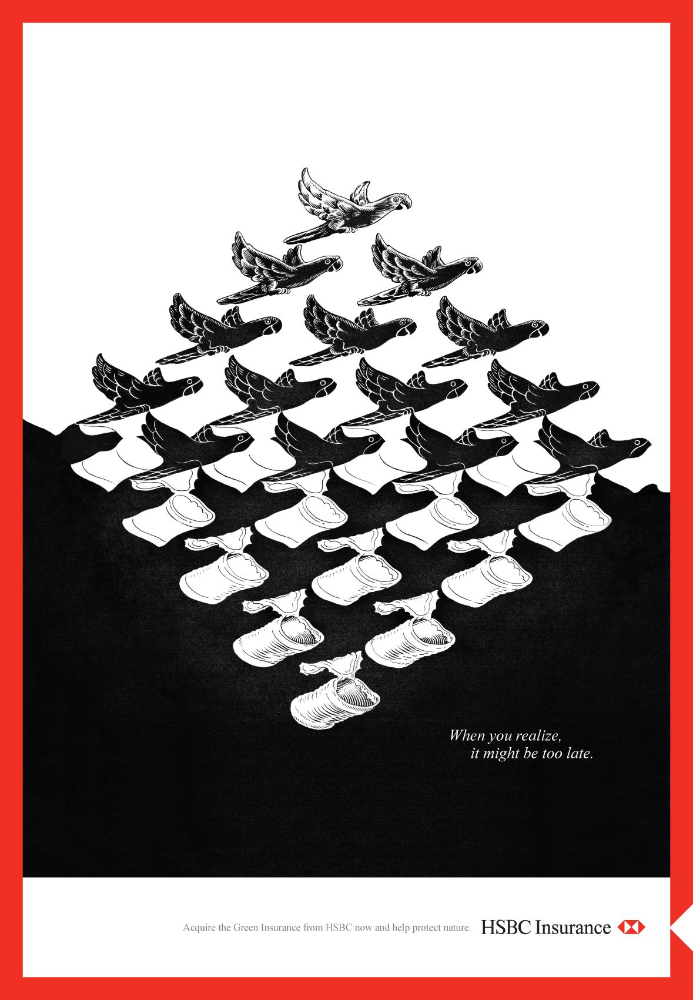
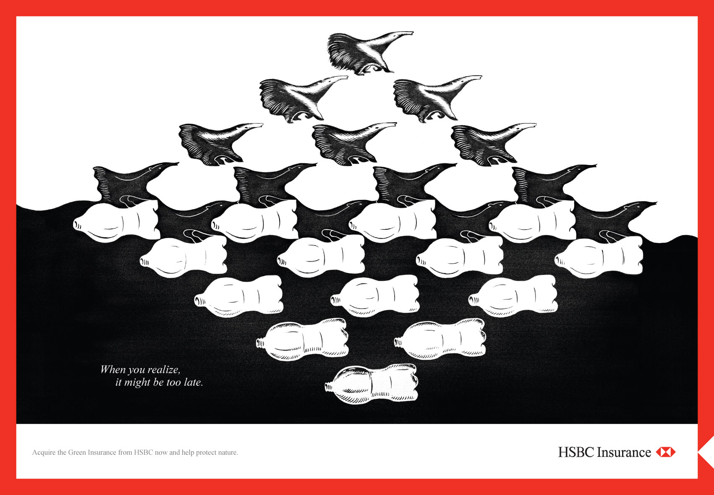
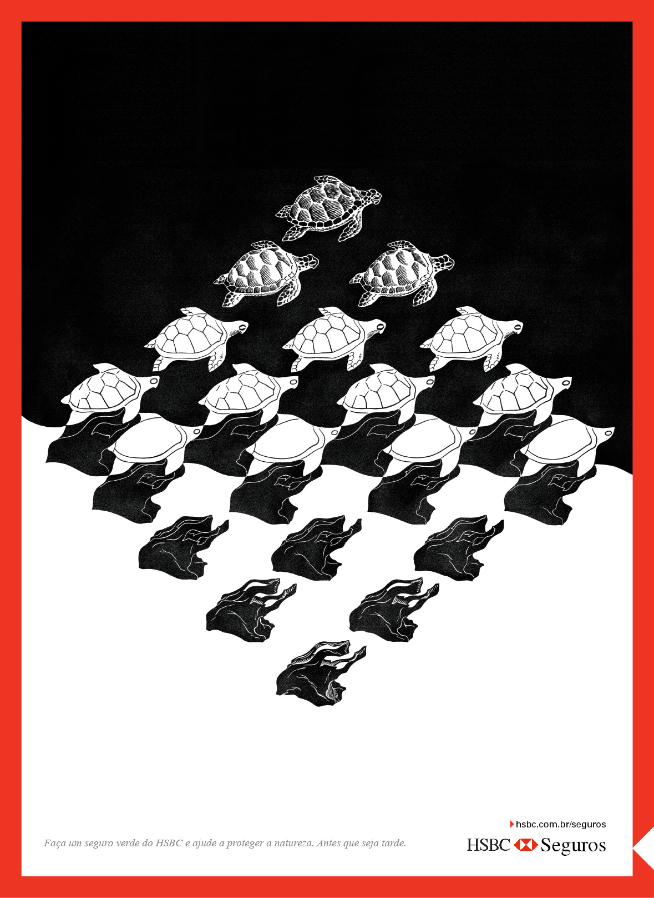
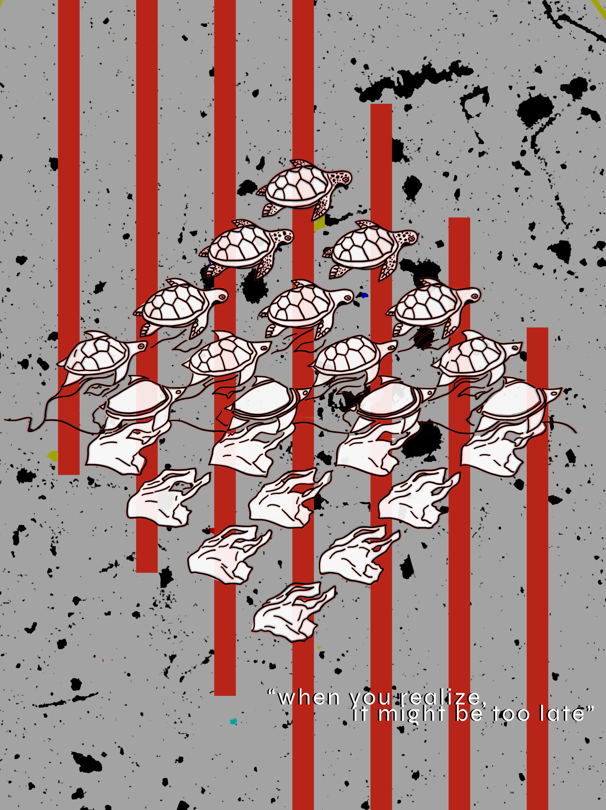
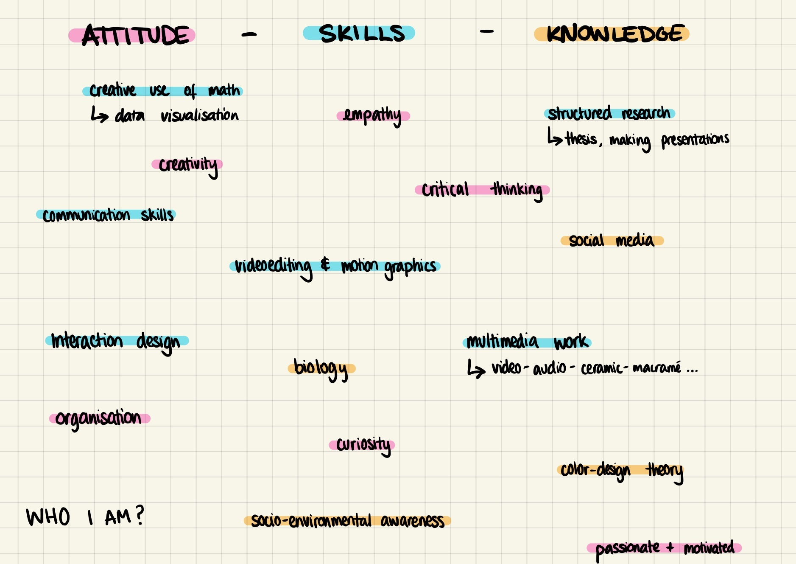
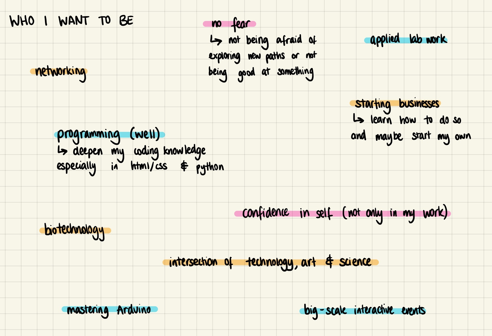
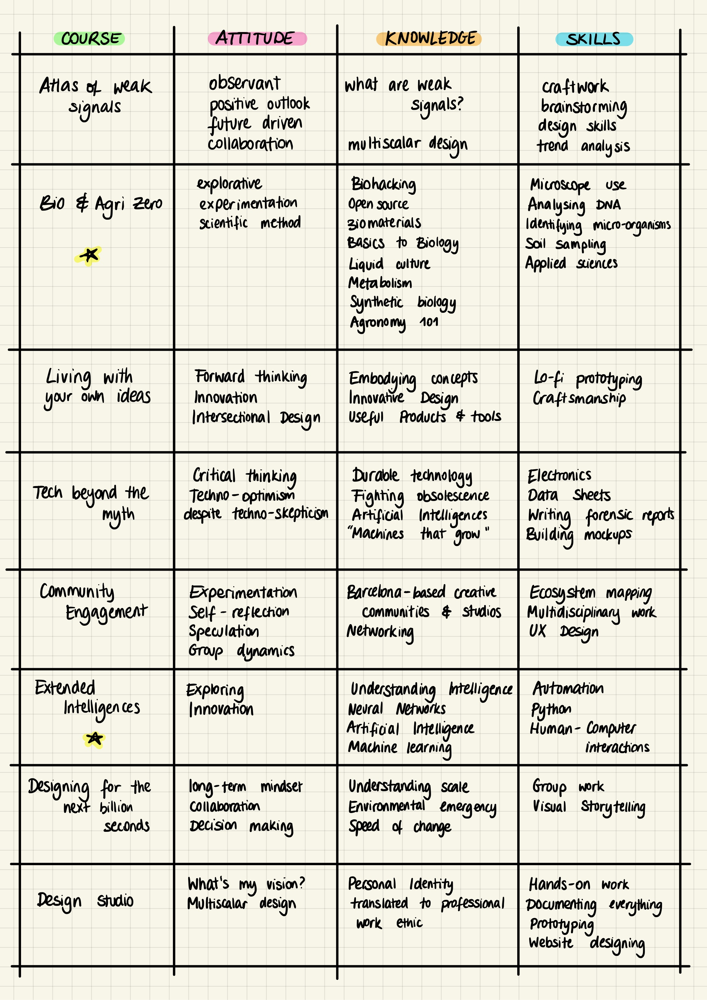

This week could be summed up as being introductory, and rightfully so. Introductions to the students, the staff, the facilities and even the neighbourhood.
On Monday we met Tomas Diez through zoom, who presented us with some interesting ideas about decentralization and having a strong "why" in our projects. Following that, the students had to talk about their fight by presenting their poster. The poster was a visual representation of any issue, concern, cause, or particular interest we felt strongly about.
Some of the posters and presentations that struck out the most to me were Nikita’s “Screw Sustainability”, which despite its provocative slogan, shared common ideas with most of the environmental-driven ideologies within our group. I also enjoyed Joaquin’s creative way of illustrating inclusive design through connecting dots, Anna’s cryptic message which highlighted actively thinking for ones’ self and Paula’s intersectional fights.
My poster was inspired by M.C. Escher’s illustrations I had seen the week before starting the course. At the Maritime museum, I saw a series of posters commissioned by HSBC pointing out the waste crisis with a simple statement: “when you realize, it might be too late.”

Escher-style posters, commissioned by HSBC, 2010


What struck me the most was not the design or the slogan itself, but the year in which they were made. Dating back to 2010, the post-mortem Escher designs seemed to shout a message which we still have not acted sufficiently upon over ten years later. We didn’t realise the severity of the climate crisis back in 2010 and we are only beginning to grasp the intensity of it now. “When you realize, it might be too late” is something that we are only realising now, hoping that it is not indeed too late.
I decided that my poster would be an renovated version of the ones I had seen at the Maritime museum. The 2021 update on how things are going. So I kept the core of the illustration along with the slogan but chose to modify the background and accent colours, thus changing the context of it. The background texture is in reality a 2019 microscopic image of microplastics found in our rainwater, highlighting the extent of plastic in our environment. The original image can be found here. The modernized version of the poster shows how much plastic is polluting our environment, not only on a human-animal scale but also on a microscopic level.

The poster I made for the first day of class.
This brings me to my fight. Starting the MDEF course, the cause that truly drives me is environmental sustainability. Rethinking our current products, habits and mindset in order to make something we can sustain throughout the years without perpetuating our polluting lifestyle we’ve had since the industrial revolution. With the technological revolution we are currently undergoing, I believe it would be irresponsible for us to keep going with the way things have been. We must transform and disrupt the mindset from our previous generations who believed that resources are infinite, consumption is perpetual and growth is never-ending.
The way I would like to apply this fight through the Master’s course is by experimenting with new technologies and biomaterials. Coming from an artistic background, I would like to reactivate my scientific side, one that I am familiar with but not used to applying, and create something impactful. I am open to explore whatever is taught to me, but I believe that the topics that will interest me the most are Biotechnology related.
That being said, I will talk about the self-reflection exercise we worked on with Oscar. We began by thinking about our personal skills, knowledge and attitude, then followed by reflecting on what we would like to acquire in the future. When I started talking to people from the class, asking them their own skills, knowledge and attitude, I began to pick up on things that resonated with me but that I felt I could still work on. Not being afraid of taking risks, learning networking and business skills, mastering Arduino, becoming a better programmer and gaining confidence are all things that come to mind.
Here is what I came up with:


The attitudes, skills and knowledge I possess versus those that I would like to acquire.
When it comes to the skills, knowledge and attitudes I would like to develop throughout each individual course, I decided to create a spreadsheet with each course and scan through the material on the emergent futures community, trying to figure out what each course could provide me.
Here is the table I made following each seminar, step by step.

The attitudes, skills and knowledge I would like to learn from each week's seminar.